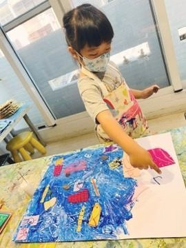
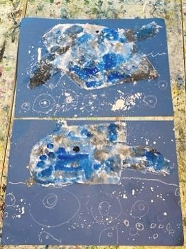
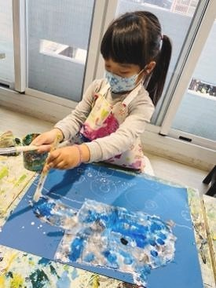
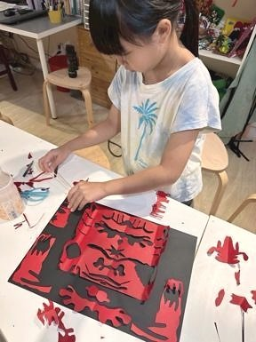
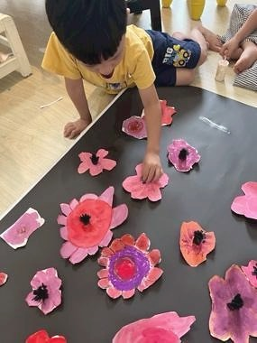
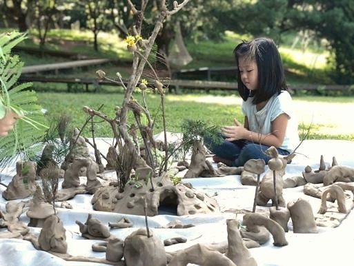

創作技法說明
設計對比主題 : 「白天與黑夜」、「快樂與悲傷」、「未來與過去」、「安靜與吵鬧」 , 讓孩子用兩張畫、或一張對分畫、或立體創作展開對比組構。
44. 對比思辨法 ( Contrasting Logic Approach ) 用創作展開「對比性」的思考練習 , 培養孩子辨別、分類與創造多元觀點的能力。






設計對比主題 : 「白天與黑夜」、「快樂與悲傷」、「未來與過去」、「安靜與吵鬧」 , 讓孩子用兩張畫、或一張對分畫、或立體創作展開對比組構。
孩子在這個方法中，不只是使用材料或學習技巧，而是在嘗試中建立自己的判斷：我看見了什麼？我想怎麼改變？我可以用什麼方式表達？這些過程會慢慢累積成孩子面對世界的感受力、思考力與創造力。